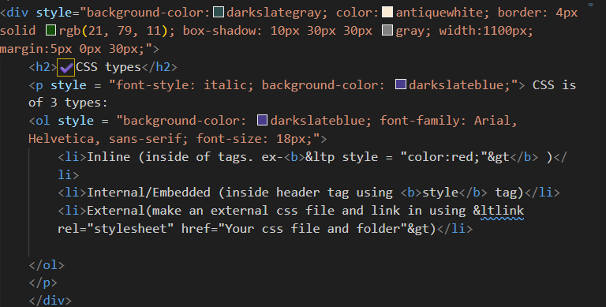

✔️Header
First of all, we need display:flex, align-item:center and justify-content: center to make the text exactly at the center of the image. And most importantly we need to add 'background-image:url('your image name and folder');' in the header style file.


✔️Box model
First content then padding then border and finally margin.


In the above SS, one can see the border which creates the outer box border, margin helps to create Distance Around the boxes and box shadow to create shadows around the box.
FUN FACT: By putting box-shadow: -5px -10px 30px; we can make shadows face the opposite direction
ANOTHER FUN FACT:The margin and border be like margin/border: UP RIGHT DOWN LEFT